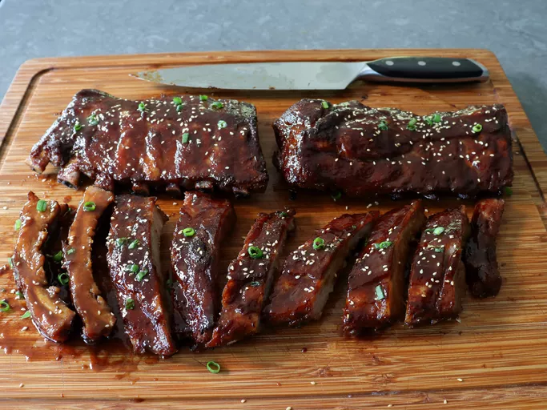

The Best Teriyaki Ribs
The best teriyaki ribs are as incredible as any teriyaki chicken, and this is the best way to marinate, bake, and glaze them.
Ingredients
- 2/3 cup soy sauce
- 2/3 cup sake
- 1/2 cup mirin
- 1/3 cup rice vinegar
- 1/3 cup brown sugar
- 1/2 teaspoon freshly ground black pepper
- 1/2 teaspoon garlic powder
- 1/8 teaspoon cayenne pepper
Steps
- Unwrap ribs, and use a sharp knife to make slashes through the membrane attached to the bone side of the racks. The membrane can also be peeled off using a paper towel. Cut racks in half for easier marinating.
- For marinade, add soy sauce, sake, mirin, rice vinegar, brown sugar, black pepper, garlic powder, and cayenne to a bowl and whisk to combine.
- Transfer ribs into a container or resealable plastic bag, and pour over marinade. Ideally ribs should be just covered with marinade. Cover container or reseal the bag, and marinate in the refrigerator for 4 to 12 hours.
- Preheat the oven to 250 degrees F (120 degrees C). Place a large sheet of foil on a rimmed baking sheet, and arrange ribs on pan, bone side down. Reserve all leftover marinade in the refrigerator until needed.
- Place another piece of foil on top, and fold edges of bottom foil up over top piece to seal. Be sure everything is folded and crimped upward to keep all meat juices in.
- Bake in the preheated oven for 2 hours. Let rest 10 minutes before unwrapping. Transfer ribs to a plate and reserve.
- For teriyaki glaze, pour leftover marinade into a saucepan, and add any cooking liquids from the rib pan. Add ginger, garlic, green onions, and sesame oil, and bring to a boil over medium-high heat. Cook until liquids reduce by about half and thicken slightly, about 10 minutes. Remove from heat.
- Turn oven up to 350 degrees F (175 degrees C). Place ribs back on the foil lined pan, and brush with teriyaki glaze. Bake for 10 minutes.
- Remove ribs from oven and brush generously with teriyaki glaze. Place back in oven for another 10 minutes. Repeat this process 3 or 4 more times, or until ribs are tender. Test with the tip of a knife, which should slide in with almost no effort.